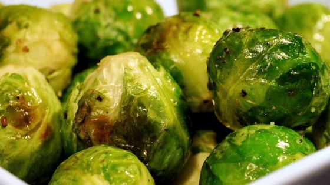

May 2,2018
5 best veggies and 5 worst anything for your dog
Best
 1. Brussels Sprouts
Provides vitamins A which is crucial for doggy vision development, B1 to help maintain a healthy nervous system, B6 to support heart development, K, and G a powerful electrolyte.
Manganese supports bone and lung health, folate prevents cancer and anemia, fiber promotes digestive health, potassium ensures your dog has the right electrolyte balance
2. Watermelon
Provide lycopene and thiamin. Lycopene is a powerful antioxidant that can protect and repair the body from damage caused by multiple diseases.
Vitamins A, B-6, and C is essential to your pet’s immune health
3. Asparagus
Provide Vitamin A, B1, B2 is an antioxidant and is essential for a nice shiny coat, C, E thickens hair and balances cholesterol, and K essential in healing
Iron is essential for hemoglobin formation (hemoglobin is the molecule in blood that delivers oxygen to parts of the body, Folate, Copper (ensures proper growth and prevents premature aging), fiber for digestive help, manganese, and potassium
4. Blueberries
Blueberries, with their high levels of resveratrol and their anti-cancer and heart disease fighting qualities, make a great option for your dog’s diet. As an added bonus, the tannins found in blueberries also help prevent urinary tract infections.
5. Apples
Full of antioxidants and Vitamin C. There’s a reason there’s the old saying about the apple and the doctor
May 2,2018
5 worst foods for your dog
Best
Worst

1. Chocolate
Contain methylxanthines that can cause vomiting, severe dehydration, seizures, and even death. Darker chocolates have a higher concentration of these chemicals because they are the least processed. White chocolate being the most processed is the lest concentrated and the least harmful to your furry friend.
2. Citrus
They contain various amounts of citric acid, which in large amounts can lead to major irritation and nervous system damage. Smaller doses like eating a segment of the fruit will most likely result in just an upset stomach.
3. Grapes
The toxic chemical in grapes is unknown, but they are dangerous and sometimes deadly. Grapes are known to cause kidney failure. Since it’s unknown what exactly in it is toxic, it’s recommended that you just keep all grapes away from pets
4. Milk
Most pets are lactose-intolerant. Diary-based foods will cause upset stomach and diarrhea.
5. Alcohol
Alcohol is pretty much poison to us, we are just bigger and can tolerate it more of it. Alcohol does pretty much the same thing to them but they have much smaller bodies, so it’s like giving whiskey to a baby. Alcoholic beverages and food products containing alcohol can cause vomiting, diarrhea, decreased coordination, central nervous system depression, difficulty breathing, tremors, abnormal blood acidity, coma and even death
April 25, 2018
Becoming a web developer
If somebody had told me a week ago that I would start a blog , I wouldn't have believed them
Just a few days later, I started working on a real blog. This is my first post and my first week doing so, so the site is kinda basic but we're gonna be making so improvements soon. Hopefully within the next week I'll be able to get it so that you guys can subscribe, leave comment, and really join the Jazzy Blogz movement. There's a team of us so you'll see different posters... posterers? Whatever anyway thanks for checking us out and we look forward to giving you solid content.